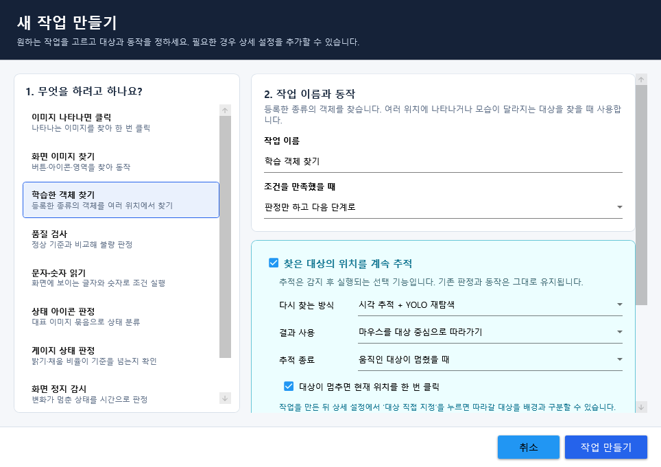

화면에서 대상을 찾습니다.
이미지 매칭, 글자 읽기, 객체 인식과 동일 대상 추적을 작업 목적에 맞게 사용합니다. 이미지·모델·OCR 데이터는 필요한 기능에 연결합니다.
VISION AUTOMATION FOR WINDOWS
찾을 대상을 고르고, 수행할 동작을 연결하세요.
이미지 찾기부터 클릭과 키 입력까지, 화면을 보며 작업을 만듭니다.
Windows x64 · .NET 8 Desktop Runtime
공개 사이트 준비본 · 기존 배포 2.7.1 사용 가능

FROM SCREEN TO FLOW
세부 인식 설정은 필요할 때 확인하고, 먼저 목적부터 정합니다.
자동화할 프로그램의 창을 선택합니다.
찾을 이미지나 글자 영역을 지정합니다.
클릭, 키 입력, 대기 등 반응을 정합니다.
조건과 반복, 발견·미발견 분기를 연결합니다.
관찰 모드로 위치를 확인하고 실행합니다.
ONE WORKSPACE
이미지 매칭, 글자 읽기, 객체 인식과 동일 대상 추적을 작업 목적에 맞게 사용합니다. 이미지·모델·OCR 데이터는 필요한 기능에 연결합니다.
클릭, 드래그, 스크롤, 키와 문자 입력을 연결합니다. 관찰 모드에서 실제 입력 전에 탐지 결과와 입력 위치를 확인하세요.
작업 순서와 폴더 조건을 구성하고 프로젝트로 보관합니다. 일시정지와 중지 상태를 확인하며 흐름을 검토할 수 있습니다.
START WITH A SMALL TASK
이미지 하나를 찾는 작업부터 시작해 보세요.
설치, 대상 선택, 관찰 모드 순서로 안내합니다.
BEFORE YOU START
기본 작업은 목적과 동작을 선택하고 상세 설정을 연결해 만듭니다. 스크립트는 더 복잡한 작업에 사용할 수 있는 고급 옵션입니다. 일부 인식 방식은 이미지나 모델 등록이 필요합니다.
Windows x64와 .NET 8 Desktop Runtime을 사용합니다. 최소화·비활성 창, DPI, 여러 모니터 및 입력 드라이버는 대상 환경에서 확인해야 합니다. 먼저 관찰 모드로 결과를 확인하세요.
현재 링크는 기존 YoloMacro-Distribution의 VisionFlow Studio 2.7.1 릴리스로 연결됩니다. 새 공개 저장소의 서명 릴리스는 검증이 끝난 후 연결합니다.
서명된 채널을 확인하고, 오프라인에서는 검증된 캐시나 동봉된 서명 채널 정책을 적용합니다. 확인에 실패하면 이유를 표시하며 로컬 진단을 사용할 수 있습니다.
현재 공개 SDK는 계약 초안과 예제입니다. 앱의 외부 DLL 호스트는 아직 구현되지 않았으며 예제를 빌드해도 앱에 자동 설치되지 않습니다.
VisionFlow Studio는 별도의 제품과 데이터 폴더를 사용합니다. YoloMacro는 Legacy 제품으로 유지하며 기존 다운로드와 인증 주소의 호환성을 보존합니다.
YOUR NEXT FLOW